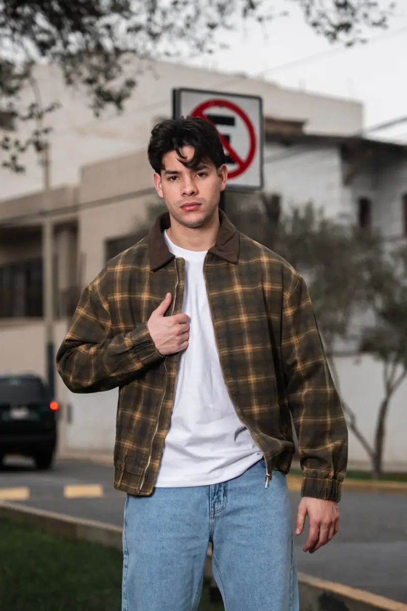
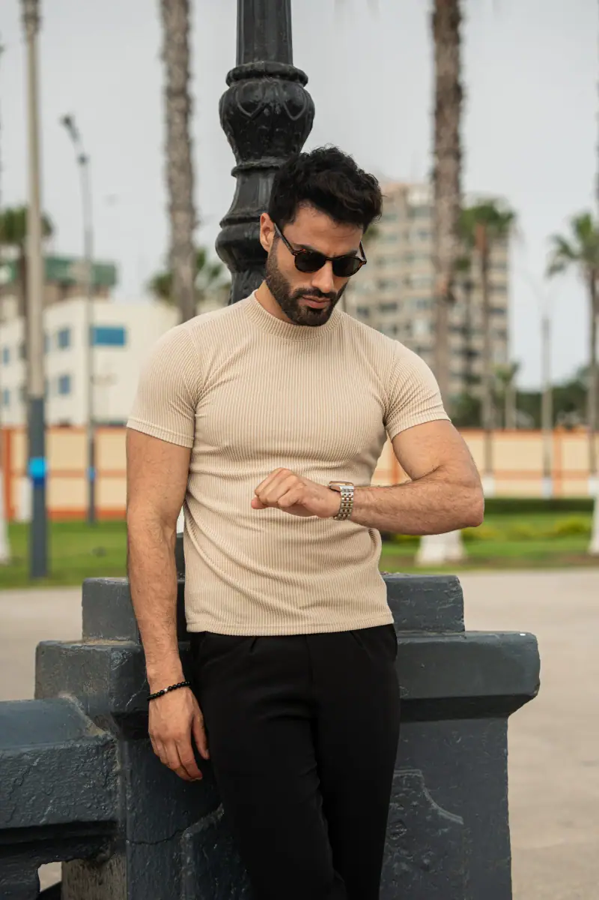

Misión
Lo que hacemos
Diseñar prendas de calidad para dos mundos, Badass y Martir Atelier, con una experiencia de compra cercana y sencilla que haga del buen vestir algo cotidiano.

Líneas, estilo, identidad. Una casa con dos formas de vestir bien.

MAISON es el universo que reúne dos mundos de moda diferentes, pero complementarios. Una misma persona puede ser ambos, sin problemas en su día a día.
Badass es el lado urbano, cómodo y expresivo: Bassic, lo básico, siempre; y Bleesst, el lado más atrevido. Martir Atelier es el lado pesado, refinado y estructurado, con la colección Maison × Uomo Cattivo: la esencia de la alta calidad.
Los dos mundos comparten lo mismo: buenas telas, cortes cuidados y una atención cercana. Si tienes dudas con tu talla, un asesor real te responde por WhatsApp.
Diseñar prendas de calidad para dos mundos, Badass y Martir Atelier, con una experiencia de compra cercana y sencilla que haga del buen vestir algo cotidiano.
Ser la casa de moda masculina de referencia en el Perú, reconocida por su identidad, la calidad de sus materiales y la confianza de sus clientes.
Lino lavado, algodón pima, denim con elastano y costuras reforzadas que aguantan el uso diario.
Patrones probados en distintos tipos de cuerpo y una guía de tallas clara en cada producto.
Nada de bots: un asesor te ayuda por WhatsApp a elegir tu talla y te acompaña hasta la entrega.
Envío a domicilio en 1 a 2 días hábiles o recojo en tienda, con cambios fáciles si la talla no es la correcta.